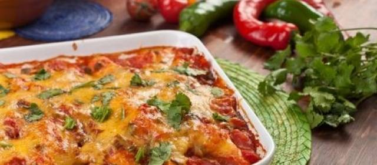

Dit gerecht komt uit Italië en word vaak gegeten omdat het binnen 10 tot 20 minuten te bereiden is.
wat je nodig hebt:
Kipfilet
400 gram
Peper
een snufje
Zout
een snufje
Bloem
een beetje
Olijfolie
2 eetlepels
Tomatenblokjes
1 blikje
Kleine ui
1
Knoflook
2 teentjes
Rode Spaanse peper
Een halve
Oregano
2 theelepels
Dunne plakjes pittig belegen kaas
100 gram
Droge witte wijn
1 glas
Bereidingswijze
DIT RECEPT IS VOOR 4 PERSONEN!
Ui en knoflook pellen en snipperen.
Spaanse peper schoonmaken, pitjes verwijderen en in kleine stukjes snijden.
1 eetlepel olijfolie in een kleine pan verwarmen en hierin de peperstukjes, ui en knoflook even aanzetten. Tomatenblokjes toevoegen en aan de kook brengen. Het moet een dikke saus worden.
Op smaak maken met peper, zout en oregano.
Kipfilet in dunnere plakken snijden. Bestrooien met wat peper, zout en bloem.
Rest olie verhitten en kipfilet snel aan beide kanten lichtbruin bakken.
Kip naast elkaar in Ovenschaal leggen.
Tomatensaus erover verdelen.
Wat oregano erover strooien en een lekkere plak kaas erop leggen.
Ongeveer 20 minuten in het midden van de oven op 200 graden, zodat de kaas is gesmolten en lichtbruin is.
